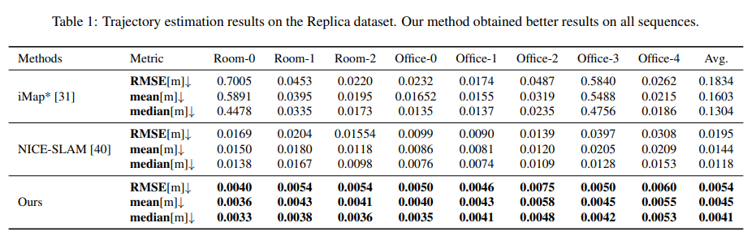
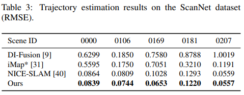

In this work, we present a dense tracking and mapping system named Vox-Fusion, which seamlessly fuses neural implicit representations with traditional volumetric fusion methods. Our approach is inspired by the recently developed implicit mapping and positioning system and further extends the idea so that it can be freely applied to practical scenarios. Specifically, we leverage a voxel-based neural implicit surface representation to encode and optimize the scene inside each voxel. Furthermore, we adopt an octree-based structure to divide the scene and support dynamic expansion, enabling our system to track and map arbitrary scenes without knowing the environment like in previous works. Moreover, we proposed a high-performance multi-process framework to speed up the method, thus supporting some applications that require realtime performance. The evaluation results show that our methods can achieve better accuracy and completeness than previous methods. We also show that our Vox-Fusion can be used in augmented reality and virtual reality applications.
We found a bug in the evaluation script which affected the estimated pose accuracy in Tables 1 and 3 in the original paper. We have corrected this problem and re-run the results with updated configurations. The corrected results are comparable (even better for Replica dataset) to the originally reported results in the paper, which do not affect the contribution and conclusion of our work. We have updated the arxiv version of our paper and publish all the latest results (including mesh, pose, gt, eval scripts and training configs) on OneDrive in case anyone wants to reproduce our results and compare them using different metrics. You can also find the updated Tables 1 & 3 below.
 
@article{yang2022voxfusion,
title={Vox-Fusion: Dense Tracking and Mapping with Voxel-based Neural Implicit Representation},
author={Yang, Xingrui and Li, Hai and Zhai, Hongjia and Ming, Yuhang and Liu, Yuqian and Zhang, Guofeng},
journal={arXiv preprint arXiv:2210.15858},
year={2022}
}We thank the authors of iMap for providing the Replica evaluation datasets. We would also thank the authors of NICE-SLAM for open sourcing their work.
This webpage design is inspired by Nerfie